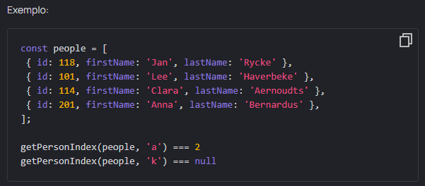

Find index
Intro
Às vezes você não precisa obter o objeto inteiro, você só precisa saber qual é o índice na matriz de origem. Bem, vamos encontrar o índice da primeira pessoa cujo nome termina com a letra especificada.
Escreva uma função getPersonIndex que receba um array people e a última letra do nome nameEndsWith e retorna um índice da primeira pessoa cujo firstName termina com a letra fornecida ou null se ninguém for encontrado. Recomendamos o uso do método findIndex.
